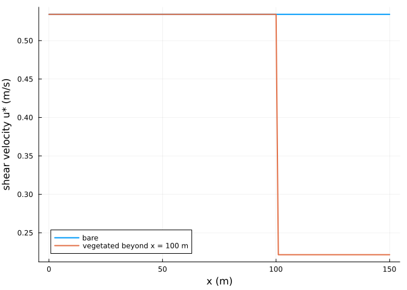
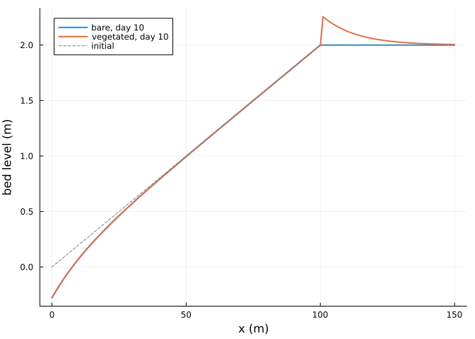
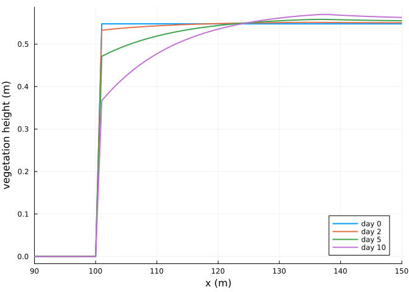
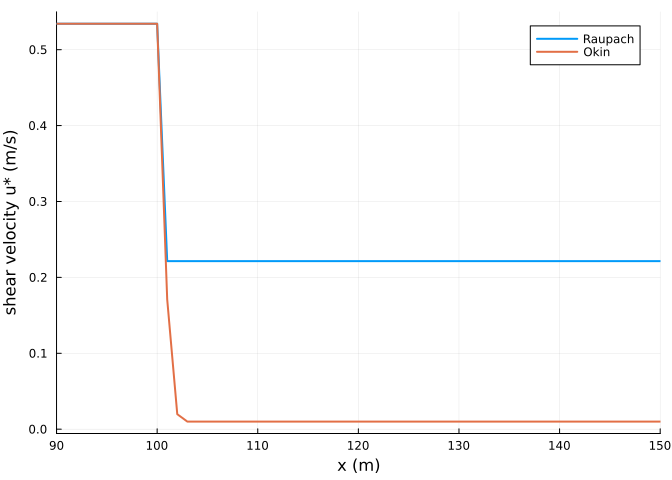

Vegetation and foredunes
Simon Frost
Overview
Dune plants reduce the shear velocity at the bed, so sand blown off the beach is trapped among them. AeoLiS reduces the shear velocity by Raupach’s factor 1 / sqrt(1 + gamma rho) of the vegetation cover rho (Raupach 1992; Raupach et al. 1993), or by Okin’s reduction in the lee of each plant (Okin 2008). Plants grow towards a maximum height and respond to burial, either with the original AeoLiS rule or that of Durán and Moore (2013). This vignette grows a foredune behind a dry beach.
ENV["GKSwstype"] = "100"
using Aeolis
using PlotsA vegetated backbeach
x = collect(0.0:1.0:150.0)
zb = @. min(0.02 * x, 2.0)
veg = @. ifelse(x > 100, 0.3, 0.0)
day = 86400.0
base = (; xgrid_file=x, bed_file=zb, wind_file=[0.0 12.0 270.0; 365day 12.0 270.0],
grain_size=0.0003, dt=3600.0, tstop=10day, output_times=day,
output_vars=[:zb, :rhoveg, :hveg, :ustar, :qs], process_avalanche=true)
bare = solve(AeolisProblem(AeolisParameters(; base...)))
plants = solve(AeolisProblem(AeolisParameters(; base..., process_vegetation=true,
veg_file=veg, gamma_vegshear=16.0,
hveg_max=1.0, V_ver=2.0, dzb_opt=0.5,
avg_time=day)))AeolisSolution with 11 output times from 0.0 to 864000.0 s, retcode Success
saved: hveg, qs, rhoveg, ustar, zbShear reduction
plot(x, transect(bare, :ustar)[:, 2]; lw=2, label="bare", xlabel="x (m)",
ylabel="shear velocity u* (m/s)")
plot!(x, transect(plants, :ustar)[:, 2]; lw=2, label="vegetated beyond x = 100 m")
With a cover of 0.3 and gamma = 16, the shear velocity falls by a factor 1 / sqrt(1 + 16 * 0.3):
1 / sqrt(1 + 16 * 0.3)0.41522739926869984Trapping
Sand arriving at the vegetation is deposited where the shear velocity drops below the threshold, building a foredune at its seaward edge:
plot(x, transect(bare, :zb)[:, end]; lw=2, label="bare, day 10", xlabel="x (m)",
ylabel="bed level (m)")
plot!(x, transect(plants, :zb)[:, end]; lw=2, label="vegetated, day 10")
plot!(x, zb; lw=1, ls=:dash, color=:gray, label="initial")
dz = transect(plants, :zb)[:, end] .- zb
(max_accretion=round(maximum(dz); digits=3), at_x=x[argmax(dz)])(max_accretion = 0.255, at_x = 101.0)Plant response
The vegetation height changes with the growth potential V_ver, less the effect of burial away from the optimum dzb_opt; the cover follows the height:
plot(x, transect(plants, :hveg)[:, [1, 3, 6, 11]]; lw=2, xlabel="x (m)",
ylabel="vegetation height (m)", label=["day 0" "day 2" "day 5" "day 10"],
xlims=(90, 150))
Okin’s shear reduction
The Okin model reduces the shear velocity downwind of each plant, with a reduction that recovers over some twenty plant heights. Under continuous cover the reductions of the plants upwind add up, so the shear velocity falls to the model’s floor of 0.01 m/s within a few metres of the edge of the vegetation, where Raupach’s factor gives a uniform reduction:
okin = solve(AeolisProblem(AeolisParameters(; base..., process_vegetation=true,
veg_file=veg, vegshear_type=:okin, tstop=day)))
plot(x, transect(plants, :ustar)[:, 2]; lw=2, label="Raupach", xlabel="x (m)",
ylabel="shear velocity u* (m/s)", xlims=(90, 150))
plot!(x, transect(okin, :ustar)[:, 2]; lw=2, label="Okin")
References
Durán, Orencio, and Laura J. Moore. 2013. “Vegetation Controls on the Maximum Size of Coastal Dunes.” Proceedings of the National Academy of Sciences 110: 17217–22. https://doi.org/10.1073/pnas.1307580110.
Okin, Gregory S. 2008. “A New Model of Wind Erosion in the Presence of Vegetation.” Journal of Geophysical Research: Earth Surface 113: F02S10. https://doi.org/10.1029/2007JF000758.
Raupach, M. R. 1992. “Drag and Drag Partition on Rough Surfaces.” Boundary-Layer Meteorology 60: 375–95. https://doi.org/10.1007/BF00155203.
Raupach, M. R., D. A. Gillette, and J. F. Leys. 1993. “The Effect of Roughness Elements on Wind Erosion Threshold.” Journal of Geophysical Research: Atmospheres 98: 3023–29. https://doi.org/10.1029/92JD01922.